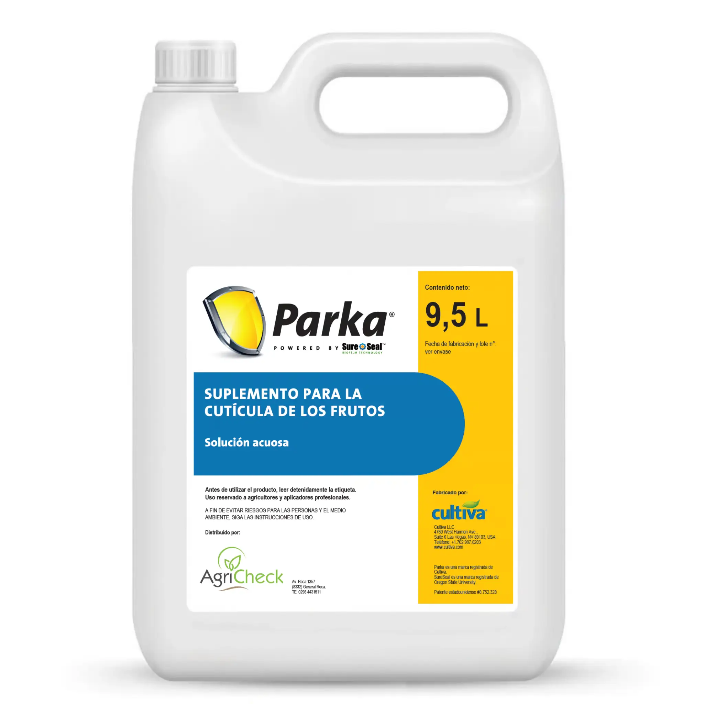
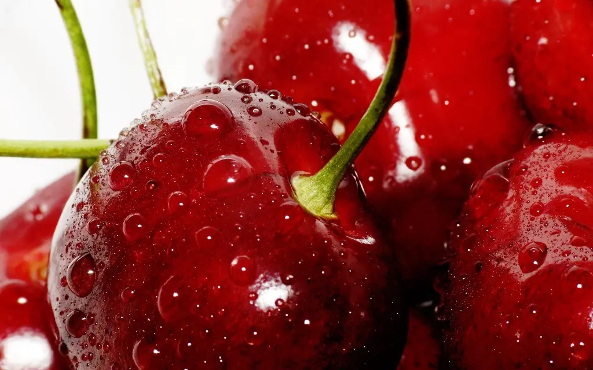
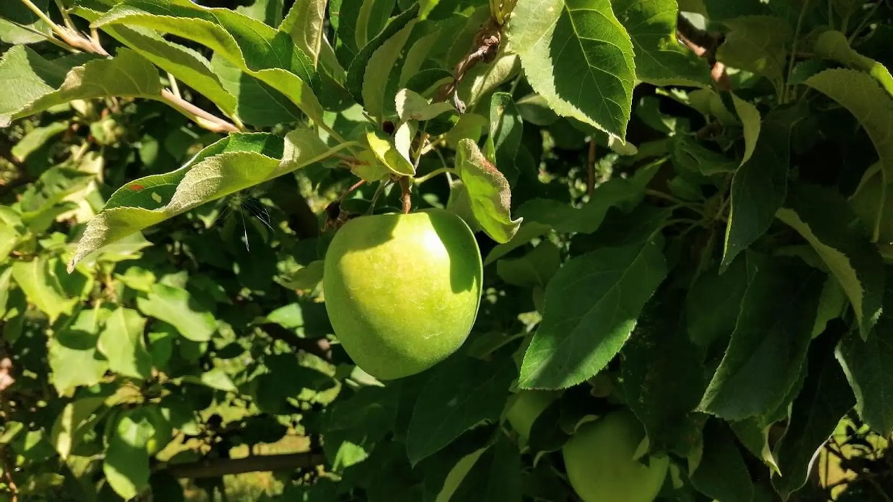

Más fruta
exportable.
Mayor rentabilidad.
No deje su inversión a merced del clima. La tecnología SureSeal™ de Cultiva LLC crea un escudo invisible y elástico que protege su fruta para lograr una terminación impecable.

El origen de la excelencia.
Parka® es un desarrollo de Cultiva LLC (Las Vegas, Nevada). Su enfoque molecular refuerza la cutícula vegetal de forma elástica y transparente, permitiendo que la planta gestione el estrés sin bloqueos físicos.
Tecnología SureSeal™
Membrana elástica compuesta por lípidos de grado alimenticio que se integra a la cutícula natural del fruto para suplementar sus defensas naturales.
Bio-Mimetismo
Imita la estructura cerosa natural de la planta para una integración celular perfecta.
Elasticidad
Se estira junto al crecimiento del fruto evitando micro-fisuras imperceptibles.
Respiración
No bloquea el intercambio gaseoso ni la fotosíntesis, permitiendo un desarrollo normal.
Control de partidura.
Parka® es el estándar mundial para prevenir el daño por lluvia. Su acción hidrofóbica sella micro-fracturas de la cutícula, evitando la entrada osmótica de agua que causa la rotura del fruto.
Mayor firmeza
Sin residuos blancos
Resistente al lavado
Post-cosecha extendida


Protección Solar Inteligente.
A diferencia de los bloqueadores físicos (caolín), Parka® trabaja a nivel fisiológico. Su matriz hidrofóbica reduce el estrés oxidativo celular y mantiene la integridad de la membrana, permitiendo que la planta siga funcionando bajo altas temperaturas.
Sin Bloqueo de Luz
Transparencia total que permite el paso de luz PAR, vital para la fotosíntesis y el desarrollo de color.
Antioxidante
Suplementa la cutícula elevando la actividad enzimática antioxidante.
Eficiencia Hídrica
Actúa como antitranspirante selectivo, reduciendo la pérdida de agua.
Packing Limpio
Cero residuos. Elimina la necesidad de lavados agresivos.
Base de Datos de Ensayos
Resumen Global
Análisis de 15 ensayos internacionales (Bing, Lapins, Santina). Dosis 9.5L/ha.
Resultado: 46% menos de cerezas partidas a cosecha comparado con el testigo.
Frutos Dobles
64% de reducción en frutos dobles cuando Parka® se aplica en postcosecha (2017-2020).
Microfracturas
Sweetheart – Univ. Concepción (2016). Parka® aumentó la fruta sana (sin microfracturas) al 84%.
INTA 24/25
Dosis: 15 L/ha (3x5L/ha). Resultado: +8.2% Fruta Sana vs Testigo.
INTA 22/23
Aumento del 9% en Asoleado respecto al testigo.
Cripps Pink
Incremento del 19% en fruta exportable Premium.
Guerrico 20/21
Mayor Asoleado (80.1%) frente al estándar.
Univ. Comahue
Incremento masivo del 28.8% en fruta sana.
Pera 24/25
Asoleado 91% vs 83% testigo.
Halkis SRL
Mejora del +14%.
INTA 21/22
Mejora significativa (~9%).
INTA 20/21
66.9% vs 51.2% testigo.